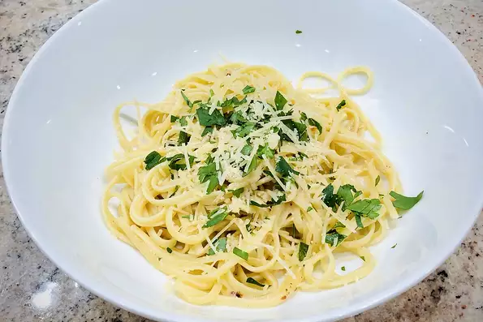

Aglio e Olio

No two spaghetti aglio e olio recipes are alike, but this one is pretty true to the classic method.
The key is slowly toasting the garlic slices to a perfect golden-brown in the olive oil. If it's too
light, you don't get the full flavor and if it's too dark it gets bitter. My advice? Do it perfectly.
Ingredients
- Pasta
- Garlic, thinly sliced
- Olive oil
- Parmigiano-reggiano cheese
- Chopped fresh parsley
- Red pepper flakes
- Coarse black pepper
Steps
- Bring a pot of water to a boil.
- Salt the water throughly before adding your pasta.
- Boil your pasta to 'just' under the package instructions, make sure to reserve some of the pasta water.
- Combine garlic and olive oil in a cold skillet.
- Cook over medium heat to slowly toast garlic, about 10 minutes.
- Cook and stir until garlic is golden brown, about another 5 minutes.
- Remove from heat.
- Stir red pepper flakes, black pepper, and salt into the pasta.
- Pour in olive oil and garlic, and sprinkle on Italian parsley and half of the Parmigiano-Reggiano cheese; stir until combined.
- Serve.